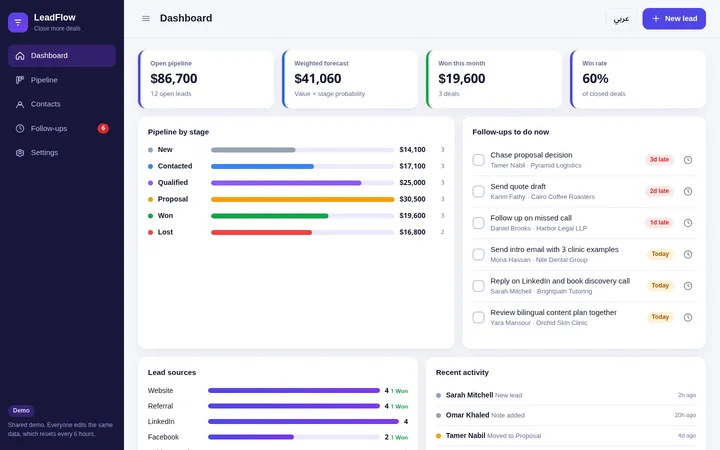
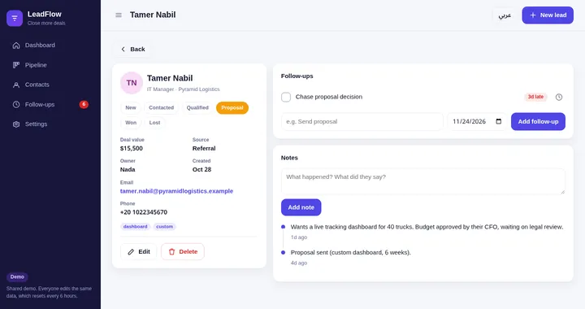
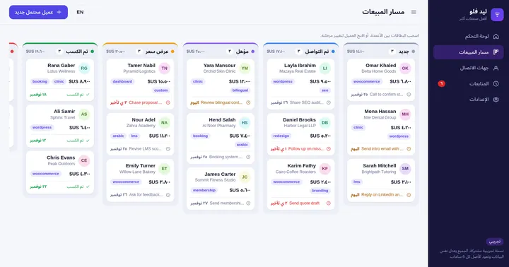
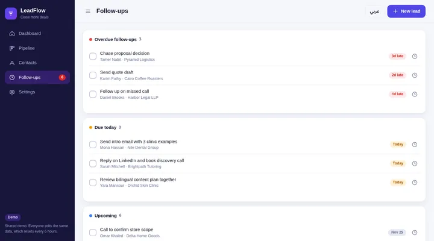
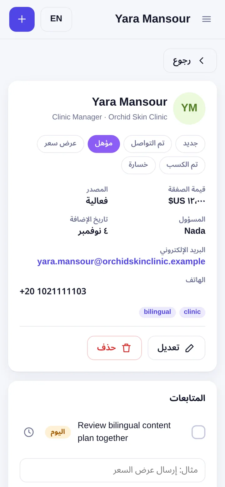

PORTFOLIO DEMO / BUILT / LIVE DEMO
LeadFlow
From first message to signed deal.
 ACTUAL BUILD
ACTUAL BUILDLeadFlow · Pipeline. Seeded demo leads.
The problem
A freelancer or small agency loses deals when enquiries sit in chats and spreadsheets and nobody remembers to follow up. They need one place that shows every lead, where it stands and what to do next, in the language of the team.
What was built
A six-stage kanban pipeline (New to Won or Lost) where cards drag between columns and show value and the next follow-up. A lead page with contact details, a notes timeline that also logs every stage change, and dated follow-ups. A follow-ups page that separates overdue, due today and upcoming, with complete and snooze. A dashboard with open pipeline, a weighted forecast, won this month, win rate, value by stage and lead sources. Search and filters on the contacts list. English and Arabic right to left, four currencies, and a phone layout.
The approach
The rules are pure functions covered by tests: validation, stage moves, follow-up state, forecast and win rate. Overdue and due-today are worked out from the date, not stored, and the server recalculates everything instead of trusting the browser. The front end is plain ES modules with no build step and every rendered value is escaped. The live demo was also driven in a real browser: create a lead, drag it between stages, add a note and a follow-up, win it, complete an overdue follow-up, and check Arabic and phone layouts.
The result
A hosted demo you can use: add a lead, drag it through the stages, log a note, schedule a follow-up and watch the dashboard and the overdue count change. The repository, tests and screenshots sit alongside.
Evidence & production limits
The hosted demo is fully interactive, but it is a demo-grade setup. All visitors share one dataset stored in a Vercel Blob store, saved as a new version on every write (last writer wins, no locking). It resets to the seed data every 6 hours, and Settings has a reset button. A real product would use Postgres and sign-in.
Built / demo. All people, companies and amounts are synthetic. Reminders appear in the app only: nothing is emailed or pushed. There is no email or calendar sync, no import or export, no automation, and no teams or permissions. The seed content is in English, so Arabic mode translates the interface, not the sample data. The repository README compares it honestly with HubSpot, Pipedrive and Zoho CRM.
Next chapter
Sign-in with Postgres, emailed reminders, email and calendar sync, CSV import and simple automations would be the next implementation steps.
Inside the build
Open any preview to see the full capture. Captures show test or demonstration content. All records shown are demonstration content, not evidence of client use.




